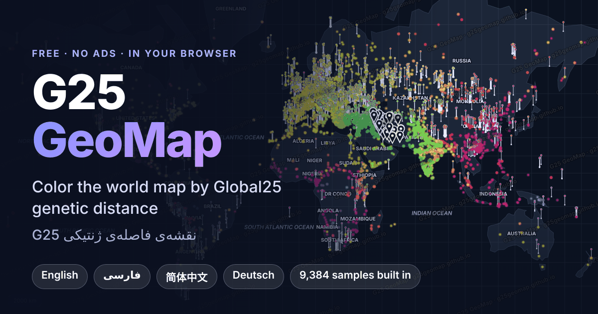

G25 GeoMap – a free genetic distance map
G25 GeoMap is a free, ad-free web tool that colors a world map by the genetic distance between the samples you tick and every other sample in its built-in dataset. Distances are Euclidean distances over the 25 Global25 (G25) coordinates; each other sample is colored by its distance to the nearest ticked sample.

What you can do
- Explore a built-in dataset of 9,384 Global25 (G25) samples – modern and ancient – on a world map. There is nothing to upload.
- Tick a whole country or single samples and watch the map change color: near to far.
- Filter modern and historical samples and filter by source prefix; ticked samples always stay visible.
- Browse a ranked list of the closest or farthest samples.
- Save the current view as a PNG image (with its legend and a small watermark) or export all distances as a CSV table.
- Use the interface in several languages, in a dark or light theme.
How to use it
- Open the map – the dataset loads by itself.
- Tick a country or single samples in the Samples panel, or click points on the map.
- Read the colors with the legend; hover a point for its name and distance; scroll to zoom and drag to move.
- Adjust filters, color scale and appearance, then save a PNG or CSV.
A short guided tour opens on your first visit and can be reopened any time with the Guide button.
The data
The map comes with one dataset, AllG25_final_prefixed_v7.txt: 9,384 samples, each with its 25 G25 coordinates. A sample is placed at the latitude and longitude written at the end of its name, for example Iran_Tehran_Sample-01_35.71_51.41. Names containing Historical count as historical samples, and the prefix of a name shows the collection the sample comes from (moriopoulos_ 8,299, G25_ 1,085 samples).
The Global25 (G25) coordinate system was created by Davidski (Eurogenes). G25 GeoMap is an independent viewer: credit for the sample sets belongs to the people who collected and published them, and the site is not affiliated with or endorsed by them.
Privacy
Everything is computed in your browser with JavaScript. The page loads its dataset file from this same site and sends nothing about you anywhere. There is no account and there are no ads or tracking scripts. The site only remembers your preferences (language, theme, panel width, whether you saw the tour or hid the mascot) in your browser’s local storage.
Optional map backgrounds are loaded from third-party tile servers (Esri or OpenStreetMap), which can see the map area you view and your IP address; the default “No tiles” background loads nothing. If you click the optional WalletConnect donation button, a wallet library is loaded from the jsDelivr CDN and connects to the WalletConnect network only at that moment. If you open the Feedback page and click to show the comment box, it is served by giscus (giscus.app) and GitHub, which can then see your IP address; nothing is loaded from them before you click.
Support the site
G25 GeoMap is free. If it helped you and you would like to say thanks, you can send a small crypto donation – it is entirely optional. Open your wallet with one click or copy an address (USDT on TRON first, then USDT and USDC on other networks, TRX, ETH, BNB, BTC, TON, SOL). Any amount is appreciated.
Feedback & suggestions
Found a mistake, or have a criticism or a suggestion? Leave a comment on the Feedback page. Comments are public and use your free GitHub account; you can also open an issue directly on GitHub.
Good to know
This tool is for education and curiosity. Distances between samples are a statistical summary of genetic similarity and are not medical, legal or ancestry advice.
Optional base-map tiles (OpenStreetMap contributors, Esri) are loaded from their providers only if you choose them. Maps and PNG images made with this site carry a small watermark with the site name.
The interface and these pages are available in several languages. The translations were prepared with AI assistance and may contain mistakes – please report them on the Feedback page.